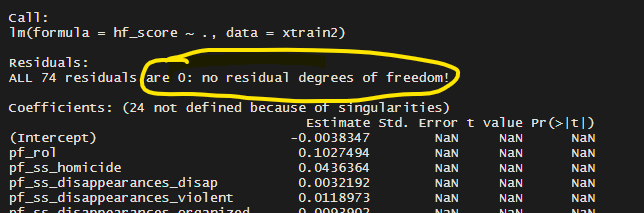
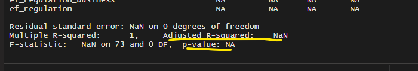
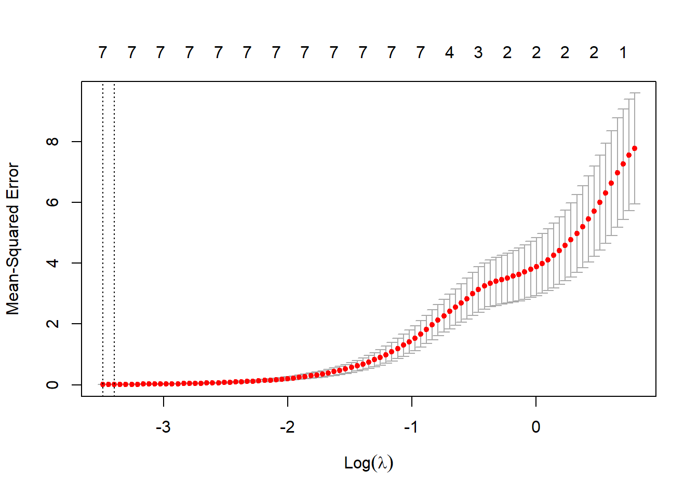
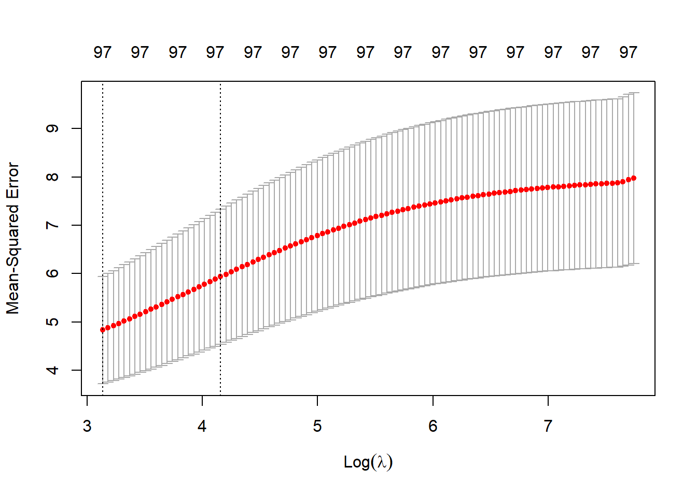

4 High Dimensional Data Example with Human Freedom Index
In this dataset, the data is already standardized. The dataset is being trimmed of summary scores and filtered to a single year. It is also being trimmed of variables with over 50% missing values. Only complete observations will be kept. This is to simulate the situation of a researcher being asked to review a single year of HFI data.
The techniques in this demonstration utilize the glmnet package to fit the regularized models. More information about this package can be found at (“An Introduction to ‘Glmnet‘” 2021)
For this demonstration, the political freedom homicide variable will be the response variable. Each of the other distinct variables (excluding indexes and total scores) will be used as predictors.
4.0.1 Trimming and Fitting a Linear Model
#Human Freedom Index Linear Model
freedomData <- hfi
freedomData <- freedomData %>% filter(year==2016)%>% select(c(-"year",-"ISO_code",-"countries",-"region",-"ef_score",-"ef_rank",-"hf_rank",-"hf_quartile",-"pf_score",-"pf_rank",-"pf_religion_estop_establish",-"pf_religion_estop_operate",-"pf_identity_legal",-"pf_rol_procedural",-"pf_rol_civil",-"pf_rol_criminal",-"pf_ss_women_inheritance_widows",-"pf_ss_women_inheritance_daughters",-"pf_association_political_establish",-"pf_association_political_operate",-"pf_association_sport_operate",-"pf_association_sport_establish",-"pf_identity_divorce",-"pf_association_prof_operate",-"pf_association_prof_establish"))%>%mutate(id = row_number())
#check missing data values
freedomData <- na.omit(freedomData)
train <- freedomData %>% sample_frac(.8)
test <- anti_join(freedomData, train, by='id')
ytrain <- train$pf_ss_homicide
ytest <- test$pf_ss_homicide
xtrainLin <- train %>% select(c(-"id"))
xtrain <- train %>% select(c(-"pf_ss_homicide",-"id"))
xtestLin <- test %>% select(c(-"id"))
xtest <- test %>% select(c(-"pf_ss_homicide",-"id"))
xtestFrame <- xtest
xtest <- data.matrix(xtest)
predictors <- data.matrix(xtrain)
resp <- ytrain
linModel <- lm(pf_ss_homicide~., data=xtrainLin) 
The figures above the show the outcome of trying to fit a traditional linear model to the data as it is. The model is not workable due to a lack of degrees of freedom to fit the number of predictors in the data set. In this case, the number of predictors could be trimmed at random to get a working model, but the regularization techniques can be used to evaluate this data set without randomly choosing predictors.
To fit the regularization models, the glmnet function will be used. The CV.glmnet function below performs a cross-fold validation on the training data in order to obtain the optimal lambda value for the respective model. In this function, the value of alpha controls the form of regularization that will be applied. An alpha value of 1 corresponds to LASSO regression, a value of 0 corresponds to Ridge Regression, and a value in between corresponds to a form of Elastic Net Regularization. The magnitude of alpha controls the penalty term in the Elastic Net Regularization. As in most regularization problems, the value of the penalty term (in this case lambda) is of critical importance.
4.0.2 Fitting Regularized Models
Each method will have a model fit. These will then have their RSquare and RMSE scores displayed to show a relative performance for each method.
The basic code structure is as follows:
- Perform Cross Validation to acquire the optimal lambda. The alpha term is altered based on the method.
- Pass the optimal lambda into a new model based on the training data.
- Examine the impact on the coefficients.
- Using the model, make predictions on the training data and the test data.
- Store results and display scores for each method.
set.seed(250)
#LASSO
modelResults <- data.frame(matrix(ncol=6,nrow=0))
colnames(modelResults)<-c("Model","Train_RSquare","Train_RMSE","Test_RSquare","Test_RMSE","CoefficientCount")
model <- cv.glmnet(predictors, resp, alpha=1)
bestLambda <- model$lambda.min
#Optimal Lambda has been fit.
plot(model)
The LASSO Lambda plot demonstrates the MSE for different values of lambda.
finalModel <- glmnet(predictors,resp, alpha=1, lambda=bestLambda)
coefTable <- coefficients(finalModel)
coefList <- data.frame(matrix(ncol=2,nrow=0))
colnames(coefList)<-c("Predictor","Coefficient")
for(x in 1:nrow(coefTable)){
if(coefTable[x,1] != 0)
{rows <- nrow(coefList)
predNames <- data.frame(coefTable@Dimnames)
newRow <- c(predNames[x,1],coefTable[x,1])
coefList[rows+1,] <- newRow
}
}
finalModelPredict <- predict(finalModel, s= bestLambda, newx = predictors)
finalModelTest <- predict(finalModel, s= bestLambda, newx = xtest)
rows<-nrow(modelResults)
newRow <- c("LASSO",eval_results(resp,finalModelPredict,freedomData)$Rsquare,eval_results(resp,finalModelPredict,freedomData)$RMSE,eval_results(ytest,finalModelTest,freedomData)$Rsquare,eval_results(ytest,finalModelTest,freedomData)$RMSE, count(coefList))
modelResults[rows+1,]<-newRow
LASSOCoef <- coefList#Ridge
model <- cv.glmnet(predictors, resp, alpha=0)
bestLambda <- model$lambda.min
#Optimal Lambda has been fit.
plot(model)
The Ridge Regression plot shows higher values of lambda. For Ridge Regression, the choice of lambda represents a factor of shrinkage. A lambda of 0 would be equivalent to normal linear regression while a very high lambda would shrink all coefficients towards 0.
finalModel <- glmnet(predictors,resp, alpha=0, lambda=bestLambda)
coefTable <- coefficients(finalModel)
coefList <- data.frame(matrix(ncol=2,nrow=0))
colnames(coefList)<-c("Predictor","Coefficient")
for(x in 1:nrow(coefTable)){
if(coefTable[x,1] != 0)
{rows <- nrow(coefList)
predNames <- data.frame(coefTable@Dimnames)
newRow <- c(predNames[x,1],coefTable[x,1])
coefList[rows+1,] <- newRow
}
}
finalModelPredict <- predict(finalModel, s= bestLambda, newx = predictors)
finalModelTest <- predict(finalModel, s= bestLambda, newx = xtest)
rows<-nrow(modelResults)
newRow <- c("Ridge",eval_results(resp,finalModelPredict,freedomData)$Rsquare,eval_results(resp,finalModelPredict,freedomData)$RMSE,eval_results(ytest,finalModelTest,freedomData)$Rsquare,eval_results(ytest,finalModelTest,freedomData)$RMSE, count(coefList))
modelResults[rows+1,]<-newRowThree different models using elastic net will now be fit with different increments of alpha.
#Elastic Net 1
model <- cv.glmnet(predictors, resp, alpha=.25)
bestLambda <- model$lambda.min
#Optimal Lambda has been fit.
finalModel <- glmnet(predictors,resp, alpha=.25, lambda=bestLambda)
coefTable <- coefficients(finalModel)
coefList <- data.frame(matrix(ncol=2,nrow=0))
colnames(coefList)<-c("Predictor","Coefficient")
for(x in 1:nrow(coefTable)){
if(coefTable[x,1] != 0)
{rows <- nrow(coefList)
predNames <- data.frame(coefTable@Dimnames)
newRow <- c(predNames[x,1],coefTable[x,1])
coefList[rows+1,] <- newRow
}
}
finalModelPredict <- predict(finalModel, s= bestLambda, newx = predictors)
finalModelTest <- predict(finalModel, s= bestLambda, newx = xtest)
rows<-nrow(modelResults)
newRow <- c("ENet.25",eval_results(resp,finalModelPredict,freedomData)$Rsquare,eval_results(resp,finalModelPredict,freedomData)$RMSE,eval_results(ytest,finalModelTest,freedomData)$Rsquare,eval_results(ytest,finalModelTest,freedomData)$RMSE, count(coefList))
modelResults[rows+1,]<-newRow
#Elastic Net 2
model <- cv.glmnet(predictors, resp, alpha=.5)
bestLambda <- model$lambda.min
#Optimal Lambda has been fit.
finalModel <- glmnet(predictors,resp, alpha=.5, lambda=bestLambda)
coefTable <- coefficients(finalModel)
coefList <- data.frame(matrix(ncol=2,nrow=0))
colnames(coefList)<-c("Predictor","Coefficient")
for(x in 1:nrow(coefTable)){
if(coefTable[x,1] != 0)
{rows <- nrow(coefList)
predNames <- data.frame(coefTable@Dimnames)
newRow <- c(predNames[x,1],coefTable[x,1])
coefList[rows+1,] <- newRow
}
}
finalModelPredict <- predict(finalModel, s= bestLambda, newx = predictors)
finalModelTest <- predict(finalModel, s= bestLambda, newx = xtest)
rows<-nrow(modelResults)
newRow <- c("ENet.50",eval_results(resp,finalModelPredict,freedomData)$Rsquare,eval_results(resp,finalModelPredict,freedomData)$RMSE,eval_results(ytest,finalModelTest,freedomData)$Rsquare,eval_results(ytest,finalModelTest,freedomData)$RMSE, count(coefList))
modelResults[rows+1,]<-newRow
#Elastic Net 3
model <- cv.glmnet(predictors, resp, alpha=.75)
bestLambda <- model$lambda.min
#Optimal Lambda has been fit.
finalModel <- glmnet(predictors,resp, alpha=.75, lambda=bestLambda)
coefTable <- coefficients(finalModel)
coefList <- data.frame(matrix(ncol=2,nrow=0))
colnames(coefList)<-c("Predictor","Coefficient")
for(x in 1:nrow(coefTable)){
if(coefTable[x,1] != 0)
{rows <- nrow(coefList)
predNames <- data.frame(coefTable@Dimnames)
newRow <- c(predNames[x,1],coefTable[x,1])
coefList[rows+1,] <- newRow
}
}
finalModelPredict <- predict(finalModel, s= bestLambda, newx = predictors)
finalModelTest <- predict(finalModel, s= bestLambda, newx = xtest)
rows<-nrow(modelResults)
newRow <- c("ENet.75",eval_results(resp,finalModelPredict,freedomData)$Rsquare,eval_results(resp,finalModelPredict,freedomData)$RMSE,eval_results(ytest,finalModelTest,freedomData)$Rsquare,eval_results(ytest,finalModelTest,freedomData)$RMSE, count(coefList))
modelResults[rows+1,]<-newRow4.0.3 Regularization Results / Discussion
The final model group looks like the table below.
print(modelResults) Model Train_RSquare Train_RMSE Test_RSquare Test_RMSE CoefficientCount
1 LASSO 0.9990255 0.07761922 0.9976281 0.04669836 12
2 Ridge 0.5081568 1.74374207 0.2968107 0.80406938 98
3 ENet.25 0.9888014 0.26311800 0.8933123 0.31319489 37
4 ENet.50 0.9964299 0.14856297 0.9769471 0.14558605 29
5 ENet.75 0.9986080 0.09276757 0.9954494 0.06468306 19The number of coefficients selected by each individual method corresponds to how “LASSO” like or “Ridge” like the alpha parameter was set. The pure LASSO regression shows that 13 predictors were selected, while the pure Ridge Regression shows all 98 possible predictors were chosen. The Elastic Net models fall somewhere between, depending on the strength of the alpha parameter.
The LASSO selected features included:
print(LASSOCoef) Predictor Coefficient
1 (Intercept) -0.0137016526623208
2 pf_ss_disappearances_fatalities -0.0100229246107959
3 pf_ss_disappearances -0.91592493871887
4 pf_ss_women_missing -9.411529587481e-05
5 pf_ss_women -0.951714353662126
6 pf_ss 2.85385812172564
7 pf_movement_domestic -0.000178619505635937
8 pf_religion -0.00519632817662716
9 pf_identity_parental_divorce -0.000510598121707783
10 ef_legal_crime 0.0427449492134439
11 ef_legal_gender -0.0121165169102116
12 ef_trade_movement_visit -0.00278044696726429The model with the best fit in this case was the pure LASSO model. As has been shown, this regression model can be used for predictions. More refinement can be performed. For example, in this case, there is still the likelihood that the model is overfit since 13 predictors is still a large number when compared to 93 observations. To further understand this is a matter of the underlying mechanics in the data. It is also possible that these 13 predictors still have some manner of collinearity present. Regularization, in this case, has now given a workable group of features to analyze for a refined linear model.